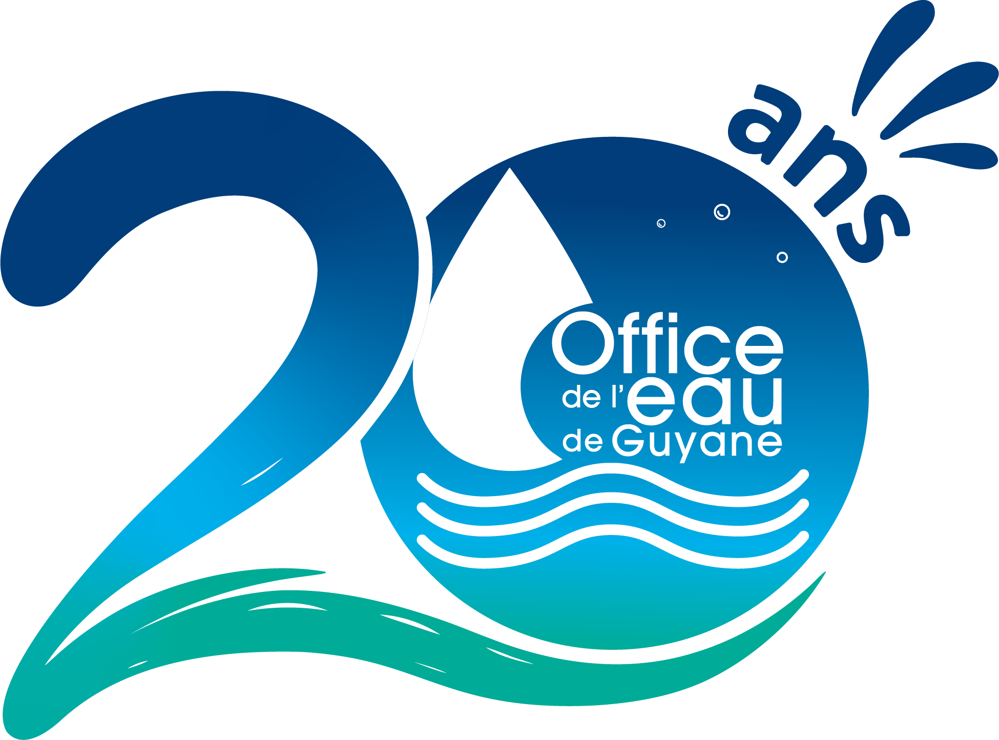

Le CRT est construit à partir de la fiche terrain sélectionnée et reprend la logique d’un compte rendu technique : identification, mission, localisation/accès, échantillonnage, résultats, qualité, photos, conclusion et validation.
Rassemble tous les CRT des fiches d'un même réseau et d'une même session en un seul document imprimable — chaque fiche garde sa page de garde et ses sections complètes, à la suite les unes des autres, avec une numérotation de page continue.
| Réseau | Fiches | À contrôler | Validées | Anomalies | Avancement |
|---|
Aperçu direct de la station : tous les paramètres in situ disponibles sont affichés simultanément. Chaque paramètre présente sa dernière valeur, sa moyenne de campagne, ses minima/maxima et sa courbe d’évolution par session/date.
| Date / heure | Action | Fiche | Acteur | Détails |
|---|
Ces éléments peuvent être enregistrés avec la configuration qualité locale de l'appareil. Les exigences normatives précises restent à décliner dans les procédures documentées de l'OEG et dans la portée d'accréditation concernée.
Les fiches sont stockées localement sur l'appareil. En plus de l'export manuel, une sauvegarde automatique se télécharge toutes les 10 minutes dès qu'une fiche est enregistrée — pensez à vider régulièrement votre dossier Téléchargements.
Aucun dossier local configuré.
Chaque fiche terrain est enregistrée dans son propre fichier ; une fiche déjà écrite n'est réécrite que si vous la modifiez. Non disponible sur cette tablette/navigateur : un export JSON manuel restera nécessaire (bouton ci-dessus).
Google Drive non connecté.
"Alléger le stockage" retire les photos, dessins et signatures du stockage du navigateur pour les fiches déjà confirmées sauvegardées dans le dossier local et/ou sur Drive — utile si un message "stockage saturé" apparaît. Rien n'est perdu : le contenu original reste dans les fichiers déjà écrits, récupérable via "Importer JSON" ou "Récupérer l'historique depuis Drive".
"Récupérer l'historique" va chercher, sur Google Drive, les fiches enregistrées par les autres tablettes connectées au même compte Google, et les ajoute à celles déjà présentes ici — utile avant de générer un CRT pour que le suivi historique d'une station soit complet.
Les opérateurs et équipements GMAO sont gérés directement dans le panneau « Gestion opérateur & équipements GMAO ». L’onglet ESO suit la structure de la fiche terrain ESO transmise.